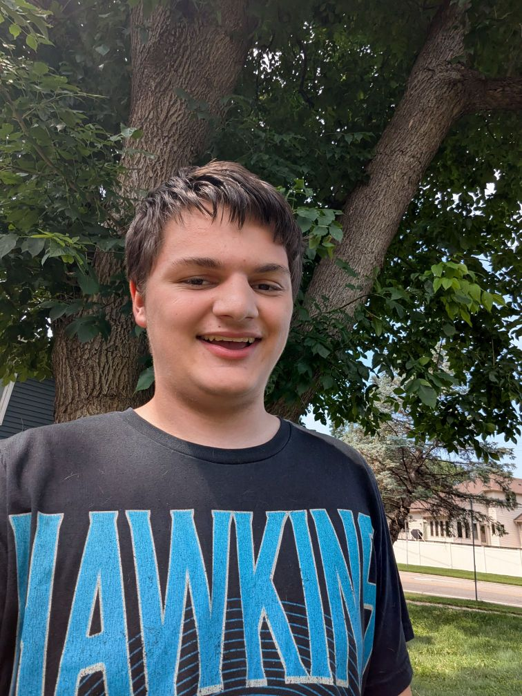
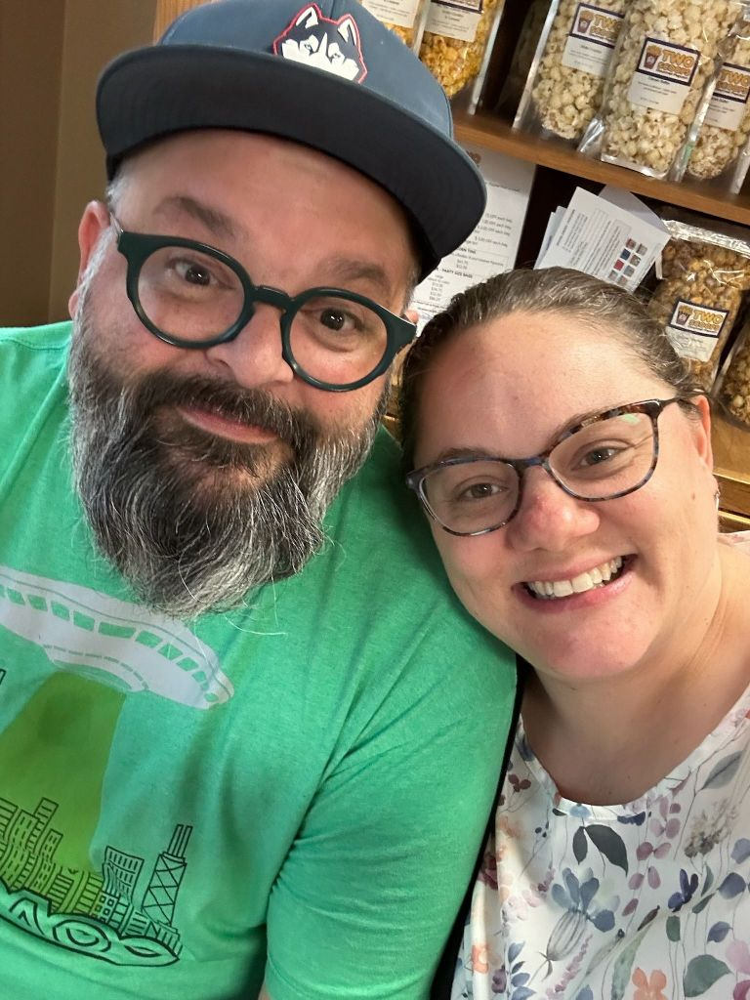
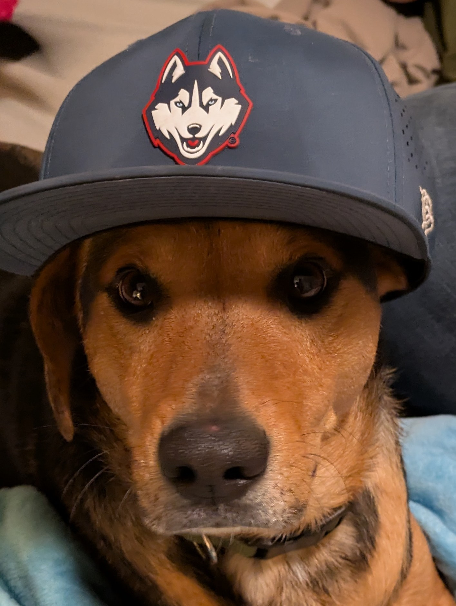

The Basics

I'm Miles Wolf Allen. I build things on the internet — tools, games, apps, websites. Some of them are useful. Some of them are just fun. Most of them started because I got annoyed at something and decided I could do it better.
I'm a Christian. Baptist. My faith is a big part of who I am and how I see the world. It shapes the way I build things — I care about doing good work, being honest, and building stuff that actually helps people instead of just looking cool.
My Family

My dad is Mark Allen. He's the founding lead pastor of Pursuit Community Church in Mounds View, Minnesota. He planted the church in November 2018 after spending over 15 years in youth ministry. Pursuit is a Converge-affiliated church that launched with over 300 people and has been growing ever since. Dad is passionate about reaching people who are far from God and building a church where everyone is known and knows others.
When he's not preaching or meeting with people, you'll find him playing golf, softball, or vintage video games.
My mom is a loving mother and fun person. I have a sister named Macy. Macy is a big fan of Forest Frank — if you know, you know.
Faith
I'm Baptist. I grew up in church, and my relationship with God is something I take seriously. It's not just a Sunday thing — it's how I try to live every day. I believe in being generous, treating people with kindness, and using whatever gifts you've been given to make the world a little better than you found it.
For me, coding is a way to do that. Building tools that save people time, solving problems that frustrate people, creating things that bring people joy — that's ministry too, even if it doesn't look like it.
Political Views
My dad and I are both libertarian. We believe in personal freedom, limited government, and the idea that people should be left alone to live their lives as they see fit. We don't fit neatly into either political box, and honestly, we're fine with that.
Pets

This is Meeko. He's a mutt and a rescue, and he's the best dog I could ask for. He was named after Meeko from Pocahontas — if you've seen the movie, you know he's a little rascal who's always getting into trouble. Our Meeko lives up to the name.
There's something about rescuing a dog that hits different. He needed a home, we had one, and now he's part of the family. He's proof that the best things in life aren't purebred or expensive — they just need someone to give them a chance.
How I Got Into Coding
It started with Scratch. You know, the block-based coding thing from MIT? I was making little games and animations, dragging colorful blocks around, and thinking I was a genius. I had no idea what I was actually learning — I just knew I loved making things move on a screen.
Then one day at school, I met a kid who was building websites. He showed me his stuff and I thought he was the coolest person alive. So I started following website tutorials on the side — basic HTML, then CSS, then a little JavaScript. Nothing serious, just learning by doing.
Eventually I took web design in school, and that's when things clicked. I went from copy-pasting code to actually understanding how it worked. From there I just kept going — Python, game dev, app building, and everything else.
My first real projects were rough. Like, really rough. But every project taught me something new. Every bug I fixed made me a little better. Every feature I shipped gave me confidence to build the next one.
The Journey
Looking back at my GitHub history is like looking at a time capsule. The early repos are simple — basic HTML pages, Python scripts, copy-pasted CSS. But they're proof that I showed up and tried.
Over time, the projects got bigger. I went from simple websites to full-stack apps. From basic scripts to emulator managers. From "hello world" to running a Geometry Dash demon list with 3,800+ verified runs. Each project pushed me into unfamiliar territory, and that's where the real learning happens.
The biggest shift was when I stopped just learning syntax and started solving real problems. The FEDL wasn't a homework assignment — it was something the community needed. OmniEmu wasn't a tutorial project — it was because I was tired of opening 15 different apps. CommandMove wasn't a coding exercise — it was because macOS was missing a basic feature.
What I've Learned
The biggest lesson? You don't have to know everything to build something. You just have to be willing to figure it out. Stack Overflow, documentation, trial and error, asking for help — that's how real development works. Nobody has it all memorized.
Another big one: ship it. Don't wait until it's perfect. Don't wait until you know every framework. Don't wait until you've read one more tutorial. Build the thing, put it out there, and iterate. A finished project that's 80% perfect teaches you more than a project that's stuck at 95% in your head.
And community matters. The FEDL taught me that. Building tools for other people — listening to what they need, fixing what's broken, making things better — that's what makes development rewarding. Code is just code. The people who use it are what matter.
Where I'm Headed
I'm still learning. Still building. Still figuring it out as I go. But that's the point, right? The journey doesn't end — it just changes shape.
I want to keep building things that matter. Tools that solve real problems. Projects that bring people together. Software that respects its users. And maybe, along the way, get a little better at what I do.
The best developers aren't the ones who know the most. They're the ones who never stop being curious.Back to Portfolio